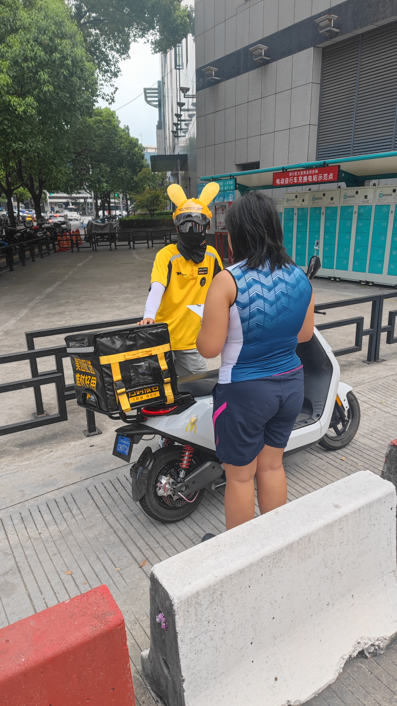

Stories of delivery riders
Mr. Huang, 26 years old, has been a delivery man for 4 years. "I joined this industry because I thought it was a free job, but after 4 years, I found that there is no freedom, unless you don't want income. I run around outside for at least 12 hours a day, and when I get home I'm so tired that I just want to lie down. Not to mention freedom, I don't even have any time for myself."
Mr. Yan, 48 years old. "I've been doing this for 10 years. My son is a college student, and he also does internships and research during the holidays like you do. I don't see him much more than a few times a year."
Mr. Fan, in his 40s, has been working outside for more than a year. "I used to do heavy work, but later my health deteriorated and I couldn't do it anymore, so I started delivering food. How long can I do it? I'll see. What I want to say most is that everyone is working hard, so we should understand each other. We deliverymen are most afraid of complaints. The company doesn't care about us. If there is a complaint, we will be fined and our day's work will be in vain. I try to work as much as possible, as long as there is no complaint."
Mr. Mao, 23 years old. "I graduated from a junior college and have been working for two years. I can't find a better job, so I'll do it for now. The work is really hard, delivering food every day. It's a dangerous job in itself, so you have to be careful about road safety. In most cases, the time given for each order is enough, so you have to be careful. If there is a better job in the long term, I will definitely want to change."
Mr. Liu, 21 years old. "I have only been doing this job for more than a month. I think the income is OK and it gives me some freedom. The normal income is 8,000 or 9,000 yuan. If I get more orders and work harder, I can probably make more than 10,000 yuan. I can only pay attention to safety issues and be more careful. I was hit by a car once, but it was not serious. I will be more careful next time."
I forgot to ask for his name. "I'm from Guangdong, and I've been working outside for three years. The economic situation is bad, and it's not easy to find a job. The income from delivering takeout in Shanghai is not bad, so I came here. If the takeout industry stays like this, I can keep doing it."